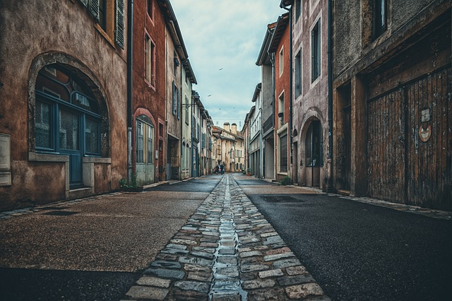
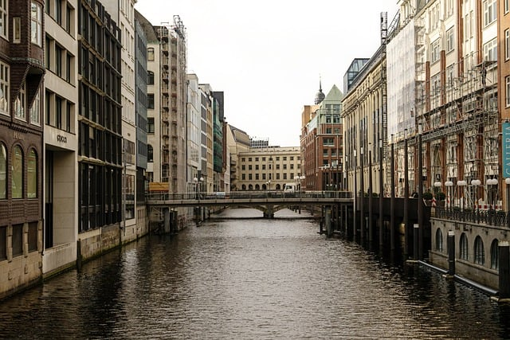
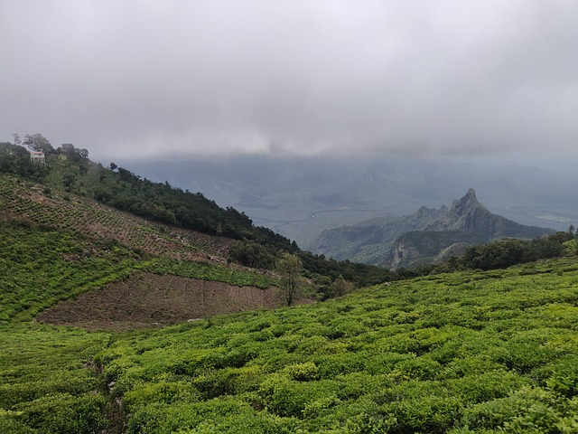

Some itinerary suggestions for you

Travel to some of the most serene beaches

Explore some rustic old world charm of interesting towns

Visit some popular destinations across multiple cities

Follow the nature's trail to some popular tea-estates in the mountains